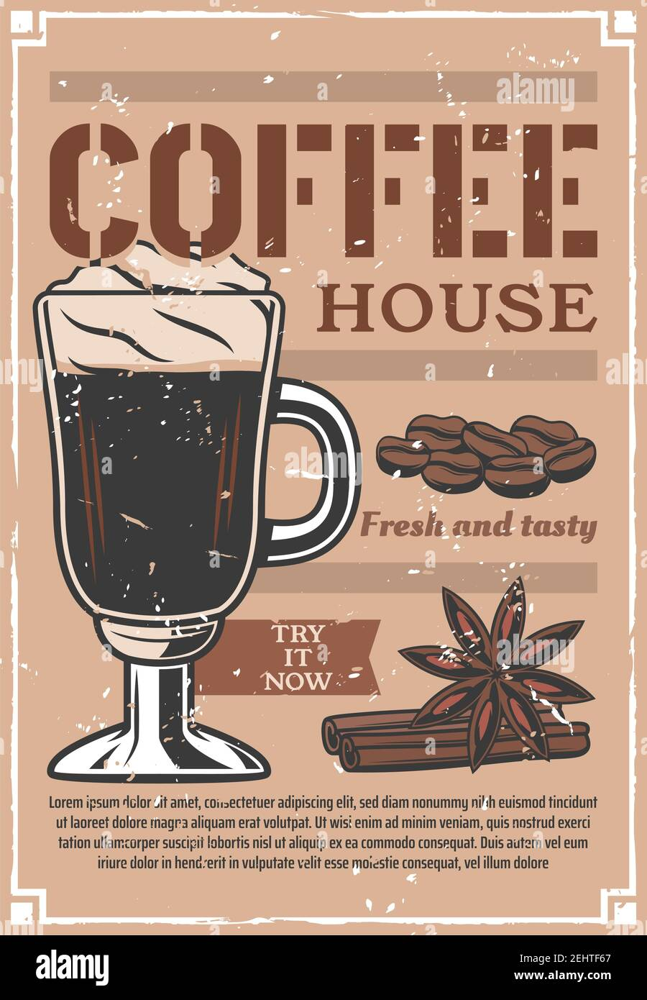

El Salto del Agrio es un gran salto de agua que cae en una pileta, cuyas paredes muestran la forma de columnas de basalto. Es de una belleza única debido a la composición de las aguas, están son muy ácidas y debido a los minerales que contienen le dan un color ocre muy particular. Además tiene la particularidad de que cae dentro de un cañadón de paredes de basalto cuando cae forma una hermosa pileta.Esto y los colores hacen del Salto del Agrio un lugar único por su belleza.Es por esto que miles de fotógrafos y realizadores audiovisuales llegan a ella de todas partes del mundo.
El acceso a este lugar increíble de nuestro sur, que se encuentra en el corazón del Parque Provincial Copahue, es gratuito. La recomendación es ir sin apuro, llevar el equipo de mate y quedarse contemplando en silencio cómo cae el agua.
Cómo llegar: El Salto del Agrio puede visitarse por cuenta propia, con cualquier tipo de vehículo (bicicleta incluso), o mediante una excursión. Para llegar desde Caviahue hay que tomar la RP 26 en dirección a Copahue por siete kilómetros y luego girar a la derecha para acceder a la RP 27. Desde ese punto son ocho kilómetros por ripio hasta el acceso a la cascada, y de ahí dos kilómetros más por tierra hasta el estacionamiento.
Advertisement
